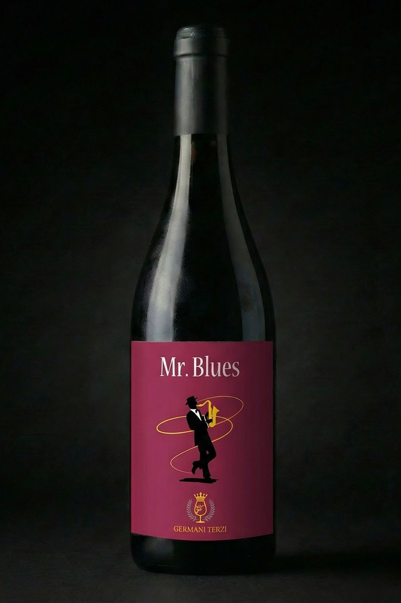
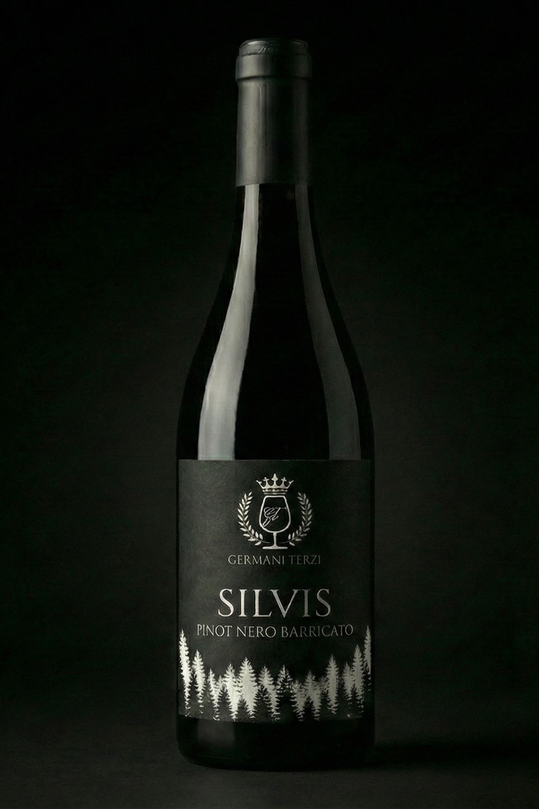

ECCELLENZA DELL'OLTREPÒ
Il nostro Pinot Nero. Da un’eccellenza dell’Oltrepò un prodotto che sperimenta.
Scopri i Vini"Una storia non sempre è originale, ma ogni storia è unica."
La passione per il vino non nasce per caso. Il pioniere Giuseppe Germani, detto 'Pino', acquisì per primo i vigneti in Oltrepò, nella rinomata zona delle fonti di Recoaro a Broni.
Scorci inaspettati, tramonti su paesi eterni arroccati sui colli. Un territorio unico dove il Pinot Nero, iconico vitigno internazionale, la fa da padrone.
Recupero di particelle storiche, sesto di impianto ottimizzato e tecnologie avanzate. Un Pinot Nero che rappresenta discontinuità e innovazione.
Esposizione prevalentemente a OVEST che garantisce illuminazione dall’alba al tramonto.
Sito nel comune di Santa Maria della Versa, località Valdamonte.
3600 bottiglie annuali. La qualità non è mai sacrificata alla quantità.
Scelta agronomica precisa per esprimere tutto il potenziale qualitativo.
Nessun diserbante durante la fase vegetativa. Inerbimento controllato che preserva la biodiversità.
Agricoltura di precisione e monitoraggio costante dello stato vegetativo.

L'espressione pura del vitigno. Vinificazione in rosso con macerazione a freddo mista.
Scheda tecnica ancora non disponibile. Una selezione barricata che sta riposando per raggiungere la perfezione.

Vieni a trovarci in cantina. Scopri i nostri vigneti nel cuore dell'Oltrepò.
Degustazioni su misura con bicchieri personalizzati.
Approfondimenti e articoli sulla nostra visione enologica.